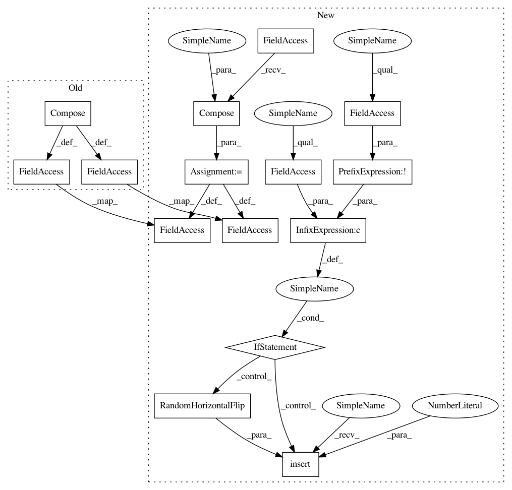

5f6e2c4a115a6a706cc011b3bf9ed9e3ef149d98,data/unaligned_data_loader.py,UnalignedDataLoader,initialize,#UnalignedDataLoader#Any#,54
Before Change
class UnalignedDataLoader(BaseDataLoader):
def initialize(self, opt):
BaseDataLoader.initialize(self, opt)
transform = transforms.Compose([
transforms.Scale(opt.loadSize),
transforms.RandomCrop(opt.fineSize),
transforms.ToTensor(),
transforms.Normalize((0.5, 0.5, 0.5),
(0.5, 0.5, 0.5))])
// Dataset A
dataset_A = ImageFolder(root=opt.dataroot + "/" + opt.phase + "A",
transform=transform, return_paths=True)
data_loader_A = torch.utils.data.DataLoader(
dataset_A,
batch_size=self.opt.batchSize,
shuffle=not self.opt.serial_batches,
num_workers=int(self.opt.nThreads))
// Dataset B
dataset_B = ImageFolder(root=opt.dataroot + "/" + opt.phase + "B",
transform=transform, return_paths=True)
data_loader_B = torch.utils.data.DataLoader(
dataset_B,
batch_size=self.opt.batchSize,
shuffle=not self.opt.serial_batches,
num_workers=int(self.opt.nThreads))
self.dataset_A = dataset_A
self.dataset_B = dataset_B
self.paired_data = PairedData(data_loader_A, data_loader_B, self.opt.max_dataset_size)
def name(self):
After Change
transforms.ToTensor(),
transforms.Normalize((0.5, 0.5, 0.5),
(0.5, 0.5, 0.5))]
if opt.isTrain and not opt.no_flip:
transformations.insert(1, transforms.RandomHorizontalFlip())
transform = transforms.Compose(transformations)
// Dataset A
dataset_A = ImageFolder(root=opt.dataroot + "/" + opt.phase + "A",
transform=transform, return_paths=True)
data_loader_A = torch.utils.data.DataLoader(
dataset_A,
batch_size=self.opt.batchSize,
shuffle=not self.opt.serial_batches,
num_workers=int(self.opt.nThreads))
// Dataset B
dataset_B = ImageFolder(root=opt.dataroot + "/" + opt.phase + "B",
transform=transform, return_paths=True)
data_loader_B = torch.utils.data.DataLoader(
dataset_B,
batch_size=self.opt.batchSize,
shuffle=not self.opt.serial_batches,
num_workers=int(self.opt.nThreads))
self.dataset_A = dataset_A
self.dataset_B = dataset_B
self.paired_data = PairedData(data_loader_A, data_loader_B, self.opt.max_dataset_size)
def name(self):
In pattern: SUPERPATTERN
Frequency: 4
Non-data size: 15
Instances
Project Name: junyanz/pytorch-CycleGAN-and-pix2pix
Commit Name: 5f6e2c4a115a6a706cc011b3bf9ed9e3ef149d98
Time: 2017-05-07
Author: taesung_park@berkeley.edu
File Name: data/unaligned_data_loader.py
Class Name: UnalignedDataLoader
Method Name: initialize
Project Name: junyanz/pytorch-CycleGAN-and-pix2pix
Commit Name: 5f6e2c4a115a6a706cc011b3bf9ed9e3ef149d98
Time: 2017-05-07
Author: taesung_park@berkeley.edu
File Name: data/unaligned_data_loader.py
Class Name: UnalignedDataLoader
Method Name: initialize
Project Name: richzhang/colorization-pytorch
Commit Name: 5f6e2c4a115a6a706cc011b3bf9ed9e3ef149d98
Time: 2017-05-07
Author: taesung_park@berkeley.edu
File Name: data/aligned_data_loader.py
Class Name: AlignedDataLoader
Method Name: initialize